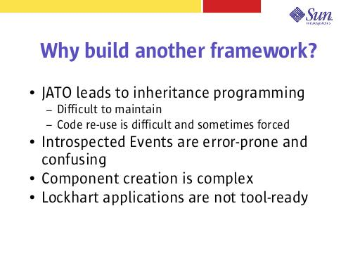

Notes:
When developing a JATO application, it is natural to develop ViewBean base classes that provide common functionality. Sharing code without base classes is clumsy and difficult to fit into the typical JATO environment.
Unfortunately, maintaining a hierarchy of ViewBeans and understanding the consequences of changing base-class code can be very confusing. Often, for this reason, code is copied to many places with an application – it is easier to copy the code you need (and perhaps change it slightly) than to figure out how to properly re-use it. This makes maintenance difficult. Also not all code that should be re-used should be in the base class, this leads to problems.
The default implementation of JATO recognizes event code by introspecting a well known naming convention. This is not always intuitive to developers and thanks to the hierarchy of View objects often present, it is not obvious what events are implemented.
Lockhart in particular makes View object creation difficult. The requirements for creating a component varies significantly. Also, where to create certain objects is not always clear. Many developers event create object in the constructor! These issues make object creation slow and inconsistent.
Lockhart applications are not toolable. The Lockhart components are not compatible with JATO's components that are toolable.